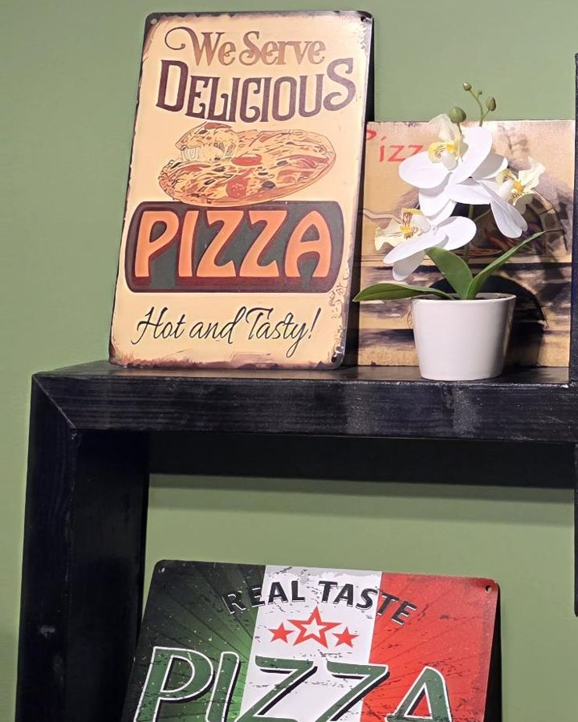
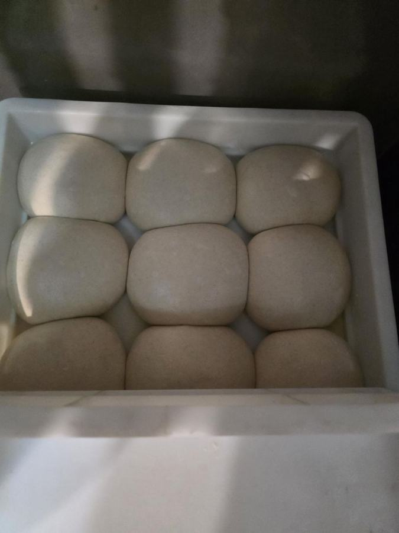

« Les meilleures pizzas de la région »
« Employé sympathique pizzas très bonne honnêteté très agréable rien a redire sa fait 4 fois je vais toujours le même accueil sa donne envie de retourner »
« Succulente! Une commande de 26 pizzas pour une soirée entre amis. 26 pizzas qui on été faites à l'heure dite. Des pizzas succulentes 😋 très bien garnis comme toujours et chaude. Même pour un certain nombre, la qualité et la quantité était bien là. Bravo et encore merciiiii Les amis ont, évidemment, adoré! »
« Service impeccable. Personnel, pizzaiolo et patron toujours souriants. Les pizzas excellentes et très large choix 🥰… »
« Personnel accueillant, il ont des produits frais, nous avons été vite servi et c’était délicieux que demander de plus !… »
« Nous commandons régulièrement (2 à 3 fois par mois), nous n'avons jamais été déçus. Par expérience d'avoir fait plusieurs pizzeria de la région, pour nous c'est celle-ci qui se démarque par sa simplicité et la qualité des produits ! Un vrai régale. »
« Pizzas incroyables, beaucoup de choix à la carte, produits de qualité, pâte excellente. L'établissement est très propre et le personnel très accueillant. A tester absolument. »
« Une tuerie. Vrai pizza au feu de bois avec une pâte mœlleuse et une garniture bien fournie. Un délice nous y retournerons »
« Délicieux, gérant avec le sourire, toujours super bien accueilli, je recommande ! Options pour les végétariens : toutes sortes de pizza Adapté aux enfants : toutes sortes de pizzas. »
« Attention, vente à emporter uniquement ! Mais la pizza était délicieuse. Nous étions en Wallonie pour quelques jours et avons choisi cette pizzeria d'après les avis. Nous n'avons pas été déçus ! Nous nous sommes installés sur un banc de l'autre côté de la rue pour déguster notre pizza. J'ai pris la pizza pepperoni, je la recommande vivement ! »
« Très bon accueil du jeune et professionnel personnel et délicieux 😋 »
« Le patron est super cool et il y a une bonne ambiance »
« Rien a dire toujours aussi bon et un service au top 👌🏿 »
« Chouette petit resto, toujours bien servis et pizzas délicieuses »
« Pizza delivery in Thuin. Lekkere pizza met fijne bodem. Gratis levering. Contact verliep vriendelijk en vlot. Alles goed. Hoewel het ons niet stoorde was de wachttijd wel vrij lang. Elektronisch betalen was niet mogelijk - er werd gevraagd om over te schrijven. Aanrader 👍 »